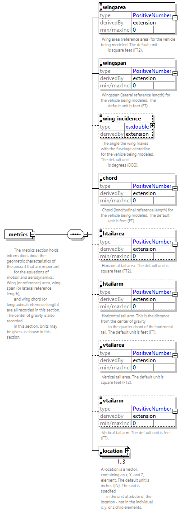

| diagram |  | ||
| properties |
|
||
| children | wingarea wingspan wing_incidence chord htailarea htailarm vtailarea vtailarm location | ||
| used by |
|
||
| annotation |
|
||
| source | <xs:element name="metrics"> <xs:annotation> <xs:documentation> The metrics section holds information about the geometric characteristics of the aircraft that are important for the equations of motion and aerodynamics. Wing (or reference) area, wing span (or lateral reference length), and wing chord (or longitudinal reference length) are all recorded in this section. The center of graivty is also recorded in this section. Units may be given as shown in this section. </xs:documentation> </xs:annotation> <xs:complexType> <xs:sequence> <xs:element ref="wingarea"/> <xs:element ref="wingspan"/> <xs:element ref="wing_incidence" minOccurs="0"/> <xs:element ref="chord"/> <xs:element ref="htailarea" minOccurs="0"/> <xs:element ref="htailarm" minOccurs="0"/> <xs:element ref="vtailarea" minOccurs="0"/> <xs:element ref="vtailarm" minOccurs="0"/> <xs:element ref="location" minOccurs="1" maxOccurs="3"/> </xs:sequence> </xs:complexType> </xs:element> |